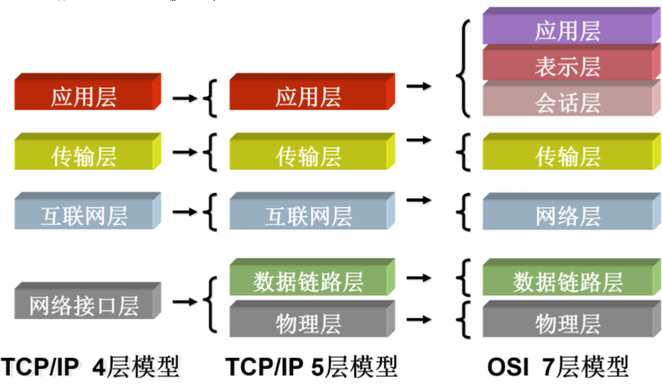
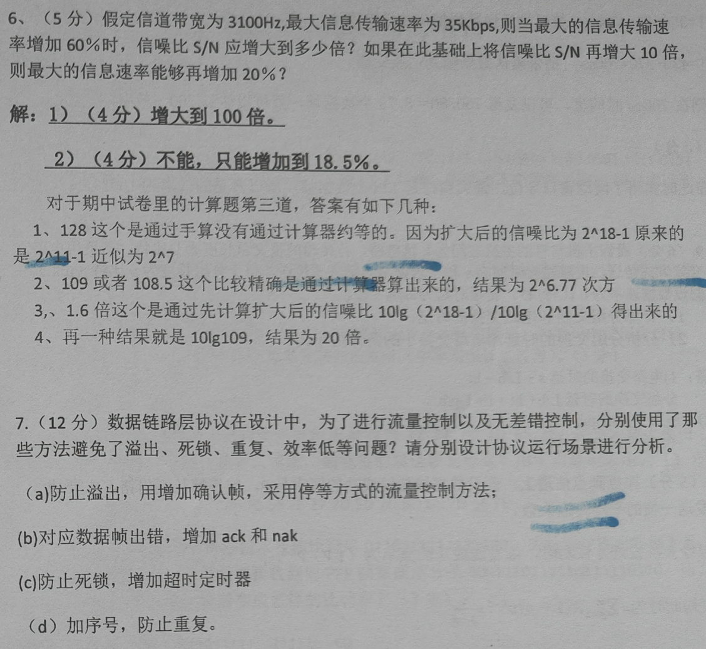

概述
算了，稍微写了一点，然后感觉好像也没啥用，主要去看题了，所以其实只是补充和调整了一下期中及之前的
体系结构

- 会话层：主机间通信
- 表示层：数据表示
- 应用层：网络应用进程
层次从下往上编号，物理层是第一层

物理层
- 速度：双绞线<细缆<粗缆<光纤
T1链路（PCM）
最初级的复用
传统的模拟话音4KHz，因此使用8KHz频率采样，即8000Baud/s，然后每波特调制为7bit，再加1bit控制信号一起传输，所以每条信道56kbps。
这个带宽太低，所以把24条这样的信道塞在一根线上，因为每秒8000次采样，所以每条信道需要每125微秒传一次数据，因此每个125us内，先传输24*8=192bit数据，然后传输1bit的成帧信号（即，将24条信道同时传输的这一个波特封装成一个帧）
别管加的那几bit的控制信号算不算带宽，总之就是1.544Mbps
- 采样时间为什么设置为 125μs？——话音信道的带宽为4KHz，按照奈奎斯特定理，采样频率应该为带宽的 2 倍，即每秒采样 8000 次，即每 125μs 采样一次。
- 时分复用TDM
- 每帧125us，所以8k帧率（波特率/采样率），每帧193bit
- 0bit为帧编码，然后分24个频道，每频道8bit，其中前7个是数据，8是信号——总之是每波特7bit数据，若指定了带宽不是4k，那就是2H*7
- 速率：8k波特率，每波特24个频道，其中每频道7bit数据+1控制——因此，每频道的速率：8k*7=56k数据，及8k的控制信号。总速率：56k*24=1.536MHZ，加上0bit处的8k速率=1.544Mbps。 （T2为6Mbps，T3为45）
ADSL（DMT）
比T1更快，大约下载30M，上传12M
T1是每125us传输一轮24条信道的数据，ADSL是把话音的4KHz大大拓宽成了1.1MHz，然后分出了256条信道，频分复用取了后面的248条拿来传输数据
- Modem（2.4kHZ）的升级，大大拓宽频率，分成多个信道，从kbps变到mbps
- 频分复用
- 上下行非对称
- 总共1.1MHZ，分到256信道，每个4312.5HZ。4000波特率，15bits/波特
- 保卫带400hz（不确定）
- 0信道（低频）是原有的电话线
- 1-5不使用，隔开数据和语音
- 2个信道上/下控制，248个信道数据传输
其他
- 怎么在物理链路上传输bit流是链路层的事（成帧、检错等），物理层只管发，它解决的是连接的建立、维持等；并尽量屏蔽物理链路的差异。并且物理链路两边的传输速率、链路层协议都要一样。
- 集线器是物理层设备
-
- 不归零编码（NRZ）：1=正，0=负
- 曼彻斯特编码：bit在时钟信号的中间表示，上/下跳变表示一个0/1，并且一段较长的0/1之间是两个bit的区分点
- 差分曼彻斯特：类似，但是每个bit表示的是与前一个bit有无差别，有差别则记为1
链路层
字节与编码
HDLC协议
- 0111 1110为首尾标志比特流
- 比特填充法
- 有连接，有序号，有ack，可靠
- 内容中出现连续5个1时，则在第五个1后插入一个0——无论不插入是否会构成0111 1110：比如0111 1100 ，倒数第二个0依然是填充进去的，需要被去除，虽然不填它也不会出现6个1
PPP协议
- flag为0xaa（某个数），转义为0xbb (另外一个数)，这构造时在这两个前面都加一个转义，解码时反之
- 字节填充法
- 无连接，无序号，无ack，不可靠
- 首尾都有flag字节
- 0x7d：转义。0x7e：帧首尾。 0x7e变为0x7d5e。 0x7d变为0x7d5d。ascii控制字符（0x20）前，加0x7d
- 协议和校验和字段的长度可变（最小5字节，最大10字节）
CRC校验码
- 生成式：多项式，从n次幂到0次幂，系数非0的项为1。如，则生成式为1001
- 计算方法：用待发送的比特流，左移生成式位数-1（最高阶），补0，除以生成式（竖式，除的每一步为异或操作），余数即为校验位
- 检验：收到的比特流除以生成式，不为0即有错。
海明码
- 纠正单个错误的码字位数下界：m个消息位，r个校验位：（或者说，表示的比特可以管到之前的比特，即4号位那个比特可以检验第5-7位的bit有没有错）
- 构造：
- 计算r
- 写n=m+r个空，从1~n标下标，1、2、4、……为校验位，空着；其他位左到右依次填入待发送码字
- 将填入的比特中，为1的位的下标异或起来。如：_ _ 1_ 010 则计算3^6=101，那么101填入上面的空格，变为1011 010就是结果。
- 检验并纠错：
- 如上述正确是1011 010，错一位变成1010 010（错校验还是消息没区别），那么把所有为1的位的下标异或起来，如：1^3^6=100即第四位出错，翻转回来得到正确的。
其他
- 调制解调器使用字节传输，所以不适用比特填充法
- ADSL比普通电话线：扩展带宽，3400以上
- 单模光纤比多模快
其他计算
- p2p信道，数据帧成功概率p，ack不会错，求成功发送的次数：
- 因为相同设备的接口针脚功能相同,比如1号端口发送2号接受，需要1号对应2号，2号对应一号
- 因特网校验和：低到高计算，溢出的高位带回低位计算，算完取反
存储-转发的分组交换网络
- 计算包的个数n、计算发送一个包的耗时t，看路径有几跳k(k跳意味着有k段路径，不算首尾k-1个节点，算上首尾有k+1个节点)；
- 传输(Transmission )耗时：：就像cpu的流水线，第一个包发出、第一个包第二跳发出的同时第二个包的第一跳发出……因此可以看成nt+最后一个包再跑了k跳
- 传播（propagation）耗时：计算d=一段路径的长度L/传播速度V ，然后耗时为
滑动窗口协议及其计算
效率：，其中，若采用piggy-back捎带确认，则为（因为加了发送一个返回数据包的时间）
停等协议
效率：W=1
有错情况的效率：p为一帧的出错率，则W=1-p
1比特的序号位和没有序号是不同的，后者会有重复帧问题，不能取消
GBN
1、效率：W=窗口长度，当P>1时取1
2、发送0-7，首尾1、2、6的ACK，计时器超时后需要重传几帧？
- 7号帧一个，因为会发出ACK6，一定意味着0-6全部无误收到
3、窗口长度与序号的关系？
- **窗口长度<最大序号，即。如序号是0~3，则窗口最大只能是0~2。**若窗口0~3，则发0~3然后ack全丢之后重传0，接收方会认为这是一个新的分组；若为0~2，则接收方期待3却收到0，就知道这个是重传的
4、即RWS接收窗口=1的情况
SR
1、效率：W=窗口长度，同上
2、发送0-3，收到ACK1，0、2超时：谁超时就重传谁，所以02两个
3、窗口长度与序号的关系？
- 窗口长度最大序号范围的一半，即。如序号是0~7，则窗口最大只能是0~3,长度是8/2=4；若序号0~4，则窗口最大是0~1,长度是5/2=2。 如第一种情况，窗口0到4的话，发出01234，ack全部丢失，则接收方认为应该接受56701，此时重传01234，其中的01无法分辨是新的还是重传的（若后者情况，窗口012的话则序号0是重叠的）
4、即RWS=SWS接受窗口=发送窗口的情况

MAC子层
随机接入
ALOHA
- 纯ALOHA：脆弱期2T（T为传输时间，为包大小d/带宽B），效率，完全分散
- 时隙ALOHA：脆弱期T，效率 ，需要统一时钟来定位时隙
CSMA/CD
-
脆弱期2t（t为传播到该网段最远处的耗时，常为线缆长度L/传播速度V）
-
半双工。随机接入的主流
CSMA/CA
无线网
802.3：曼彻斯特编码，速率=赫兹=码率/2，一次调制10bit，